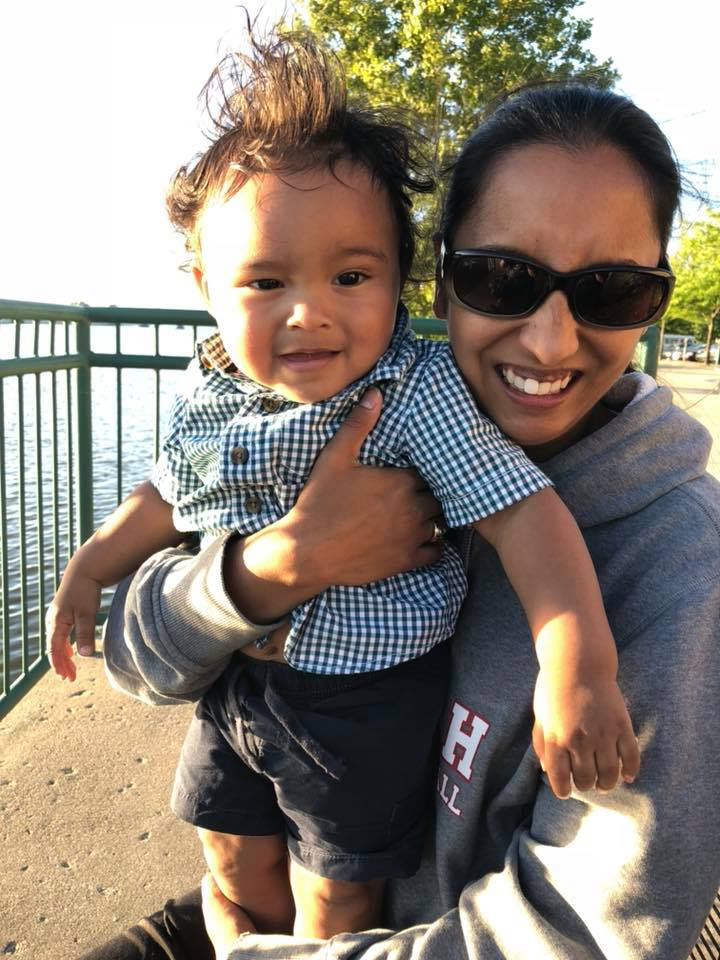

This is where you get to learn about my humble beginnings and the meaning of my existence. Hot diggity dog!
I was born as an untouchable in the slums of Calcutta on August 20, 1983. I spent a short period of time in an orphanage where I was rocked at least once by Mother Teresa! I was then adopted, and arrived at the Detroit Metro Airport December 3, 1983...and then I caught a ride from my mom to my new home in Grand Rapids which is where I grew up. I graduated from City High School, and then attended Grand Valley State University where I majored in Physical Education and minored in Elementary Education. I taught for 6 years, then worked for an optometrist, and then most recently for a dentist. My desire for a new career path led me to Grand Circus. I'm on an adult co-ed softball team where I'm THE all-star 2nd baseman. I enjoy coaching, playing basketball for leisure, volunteering, and I got jokes for days! ... Oh yeah..I have a nephew, Colton, who is just the cutest thing ever!
